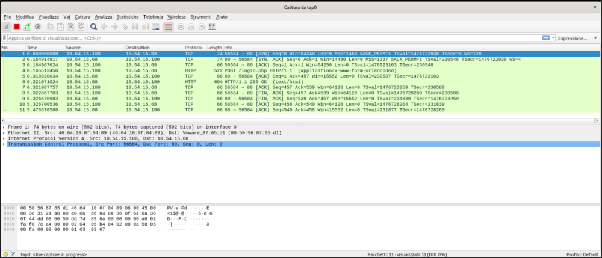
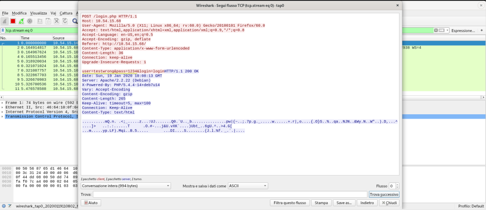
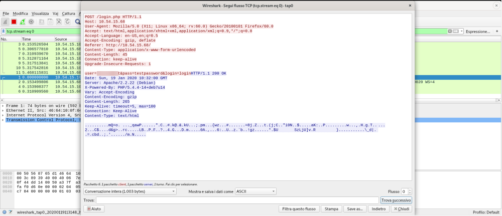

http(clear text data)
In the following window we can see all the traffic exchanged between the web browser and the server
right click on the first row of the TCP connection→ follow→ TCP stream
and we have the following window:
The sniffer(wireshark) how we can see recorded the traffic between the two applications(web broswer and the server)
• the red text is the traffic that we have sent with our web browser
• the blue text is the text sent to us by the the server
we can see in clear the user credential sent by the browser user=testwrong and password=1234
the following window has the correct credentials
to clear the previous traffic from wireshark we have to click on the "green pin of shark"(reload capture)